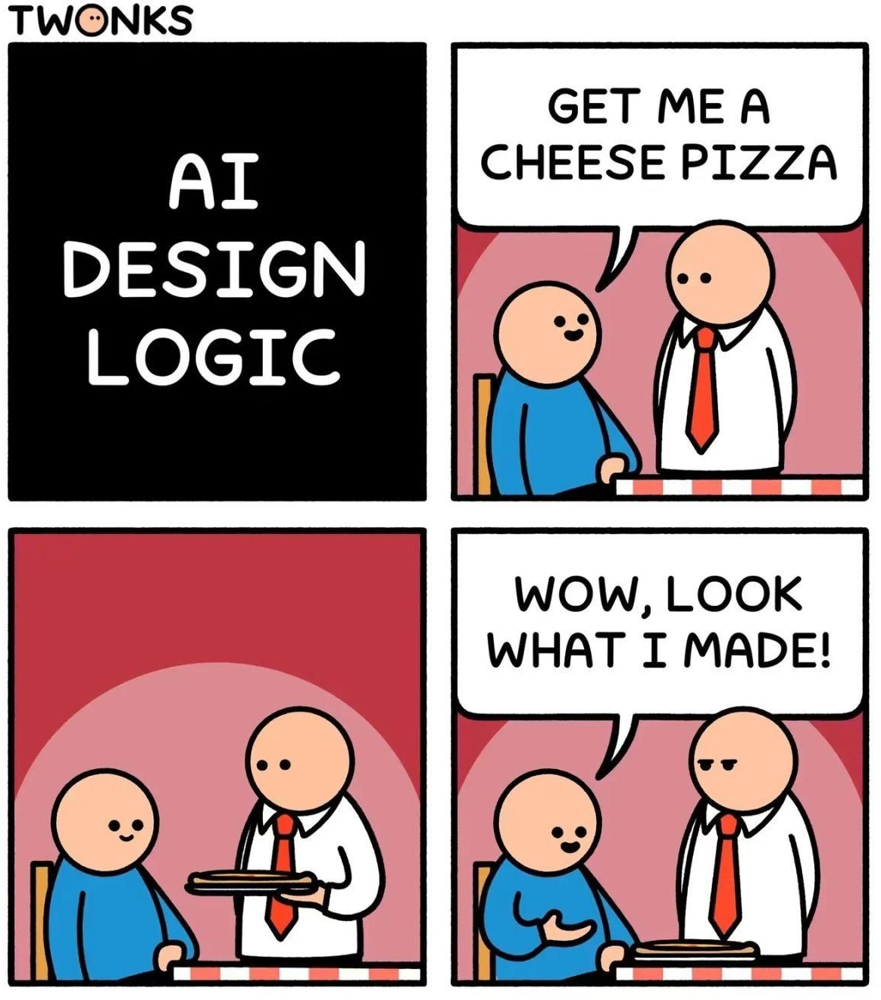

W#01 What is Data Science?
Jan Lorenz
Data Science Profiles
Not ready yet.
What is Data Science????
https://x.com/kareem_carr/status/2092630820640976999?s=20
https://x.com/kareem_carr/status/2093730567443402774?s=20
Use conversational AI in class?
- Conversational AI is great for learning
- Explain concepts even simpler
- Explain concepts from different perspective
- Go deeper with follow up questions
- Explain code
- … and it is bad for learning!
- Cognitive offloading
- Would you bring a forklift to the gym?
Source: Gemini prompted by me (several iterations and restarts)
Source: Facebook
- Can you claim work done by AI as yours?

Source: TwonksCognitive offloading
- Using a calculator you do not learn better mental arithmetic skills
- Do you learn when you use AI to do your homework
- Do you need mental arithmetic skills? (Answer for yourself)
Research shows, that cognitive offloading massively prevents learning!
Stromberg, D., Lei, V., & Wu, Y. (2026, June 2). The Generative AI Learning Penalty: Evidence from Chinese Secondary Education (SSRN Scholarly Paper No. 6868618). https://doi.org/10.2139/ssrn.6868618 (Pre-published)
Learning with AI
- Learn how to use AI in a way that you also learn yourself
- How can you assess that it is happening? Some indicators:
- You feel your questions become more competent
- You can explain what AI did in every step
- You question AIs answers when you find implausible things
- You write a summary of your understanding back to AI and understand the response
Cash, T. N., Kelly, M. O., Macnamara, B. N., & Risko, E. F. (2026). Is AI making us stupid? Trends in Cognitive Sciences, 30(8), 673–675. https://doi.org/10.1016/j.tics.2026.06.004

MDSSB-DSCO-02: Data Science Concepts